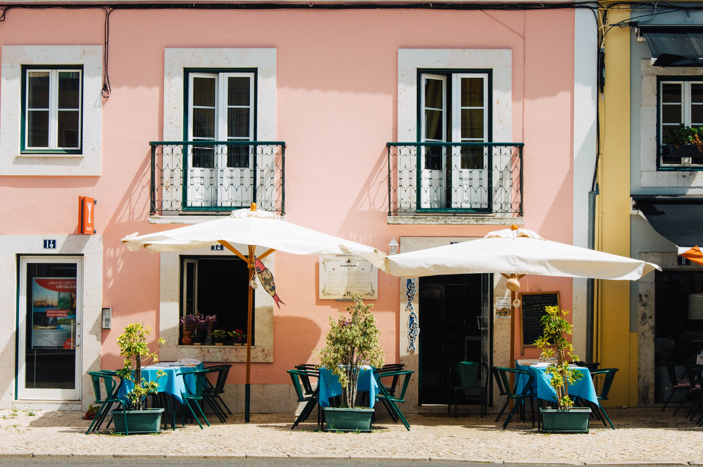

Olá Lisboa!

Let's go surfing


See the seven hills of Lisbon!
Number seven is a very curious number. There are seven deadly sins, seven wonders of the ancient world, seven massive inclinations in Rome and Lisbon.
Tram #28
The number 28 Lisbon tram connects Martim Moniz with Campo Ourique.

Golden Gate..?
No, Ponte 25 de Abril :)

Where to eat?
Um café, por favor!
Go to #lisboacome on Instagram for awesome restaurant suggestions!
Coffee drinking is a serious business in Portugal. There’s no way you can come here and not have to order a coffee at some point, so here is some essential information. These are general guidelines. No two cups of coffee will ever be identical no matter what words you use. Relax, it’s just a drink. The most popular coffee is an espresso. In Lisbon you would order um bica (oong beekuh) and in Porto um cimbalinho (oong simbalEENyo). Elsewhere um café (oong kaFEY). There are infinite variations on how it comes, so don’t be shy about being specific about your needs. Cheia (shayuh) is a full espresso cup, tres- quartas (tresh kwartas) 3/4 full, a ristretto is called um italiano (small, strong, the first few seconds of the machine’s coffee). You could ask for it não quente (nowng kent; not hot;) and they’ll put a dash of cold water in it for you.